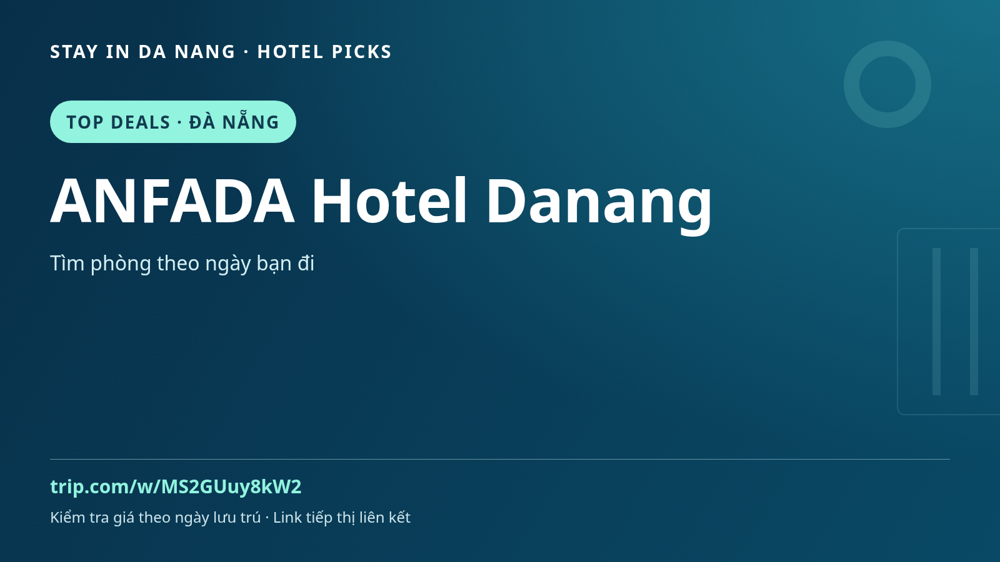

ANFADA Hotel Danang | Где остановиться в Дананге: путеводитель
Планируете Дананг? Добавьте ANFADA Hotel Danang в список сравнения жилья для поездки по Центральному Вьетнаму с местной кухней, культурой и дневными экскурсиями.

Как оценить ANFADA Hotel Danang
Сначала сопоставьте расположение с маршрутом. Изучите свежие отзывы, фотографии номеров, отмену, завтрак и транспорт. Удобства, цены и доступность зависят от даты и категории номера: уточняйте на странице бронирования, а не по названию или рекламе.
Идеи для поездки
Оставьте время для Микхе, района реки Хан и отдельной поездки в Хойан. Это идеи маршрута, а не обещание близости отеля. Сравните даты, заранее организуйте трансфер и делайте паузы между занятиями.
Перед бронированием
- Уточните адрес и транспорт по маршруту.
- Сравните номер, число гостей, питание, налоги и отмену.
- Проверьте доступность и итоговую цену на свои даты.